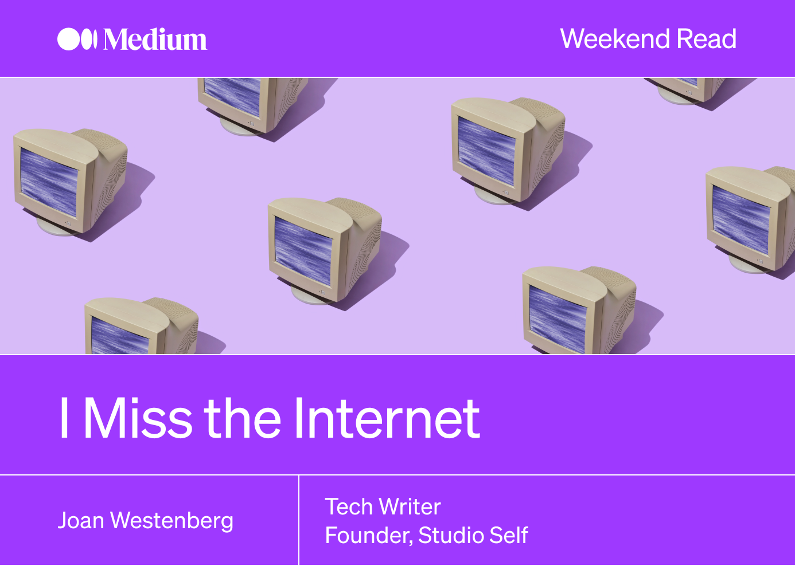
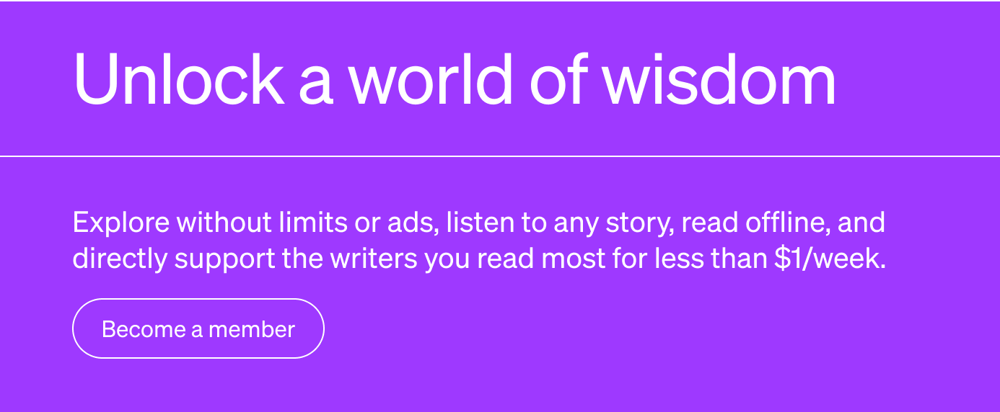

|  |
Una carta de amor a los webmasters y GeoCitiesSé que esto me hará sonar viejo, pero extraño Internet. El verdadero Internet. El que solíamos tener. Antes de que todo se volviera mucho menos, y de alguna manera mucho más, complicado. Me conecté a Internet por primera vez alrededor de 2001. Los años 90 habían terminado y el mundo se estaba conectando mientras yo salía de mi caparazón y me volvía más consciente de mí mismo. Me descubrí a mí mismo, la versión de mí mismo que podría existir más allá de los límites de mi familia, mi vida de iglesia y mi mundo estrictamente heteronormativo, en hilos interminables en Absolutepunk.net. Era un lugar donde podía hablar sobre música, mis pasiones, quién era y quién quería ser. Extraño ese internet.El que existía antes de los términos de servicio. El que existía antes de las gráficas sociales. Aquella en la que ser Usuario significaba tener un grado de respeto, no ser tratado como una estadística de retención/abandono. El Internet que anhelo no era perfecto, ni mucho menos. Pero sus imperfecciones se sentían como las peculiaridades de un querido amigo. Los tonos de conexión de acceso telefónico lentos y vibrantes, la emoción de unirse a un nuevo foro, la anticipación mientras esperaba que se cargara una página y el lujo del anonimato eran parte del encanto. En aquel entonces, Internet se sentía como una gran frontera, una extensión sin límites que esperaba ser descubierta. No navegaste tanto por la web como la exploraste, encontrando territorios desconocidos y gemas inesperadas. Los sitios web tenían menos que ver con la utilidad y más con la pasión. Los webmasters aficionados crearon sus dominios como expresiones personales, pequeñas porciones de su mundo a las que te invitaron. Las redes sociales aún no habían estandarizado nuestras experiencias en línea y el contenido no estaba algorítmicamente cuidado. Internet se sintió, de alguna manera, más humano, más real. Una mezcolanza de autoexpresión, creatividad y conexión humana, puntuada por divertidas animaciones de GeoCities y memes tempranos. Fundamentalmente, Internet era un lugar de autodescubrimiento. Era donde podía tropezar con diferentes visiones del mundo, confrontar sus prejuicios, relacionarse con otros que eran diferentes a usted y, al hacerlo, aprender más sobre usted mismo. Para muchos de nosotros, fue el primer espacio donde pudimos expresar nuestros pensamientos sin miedo a ser juzgados, un refugio seguro donde pudimos explorar nuestras identidades. Se siente como si hubiéramos llegado a un callejón sin salida con el Internet de hoy, una coyuntura desilusionada de la que no hay vuelta atrás. El panorama digital, que alguna vez fue vasto, caótico y emocionante, ahora está meticulosamente dividido, monitoreado y optimizado, y las corporaciones reclaman cada centímetro con la intención de predecir nuestros comportamientos y preferencias. La sensación de exploración, serendipia y conexión humana genuina es un recuerdo nostálgico, un eco distante de una era pasada. — Lee el resto en Medium |
|  |
|
Enviado por Medium · 548 Market St , PMB 42061, San Francisco, CA 94104 |